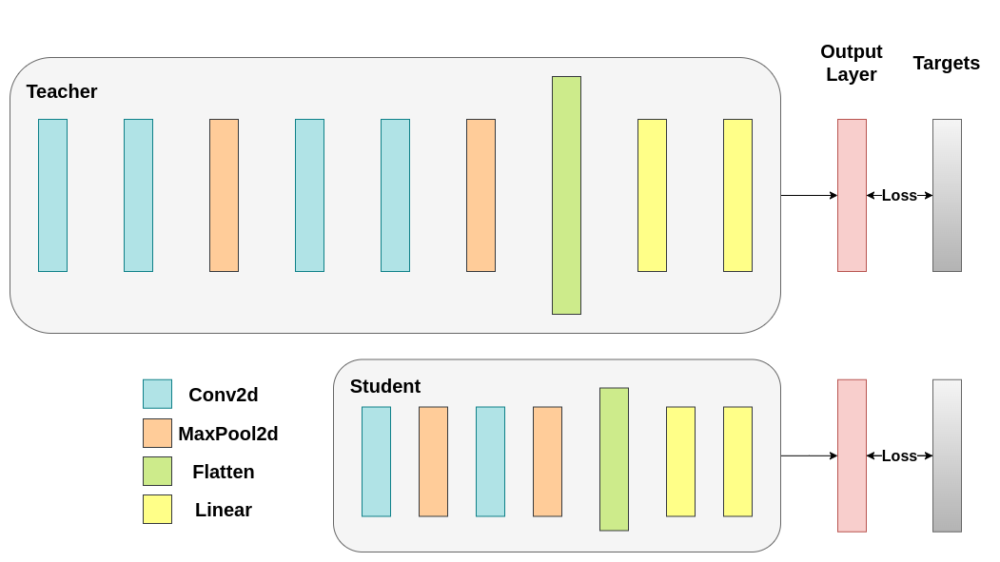
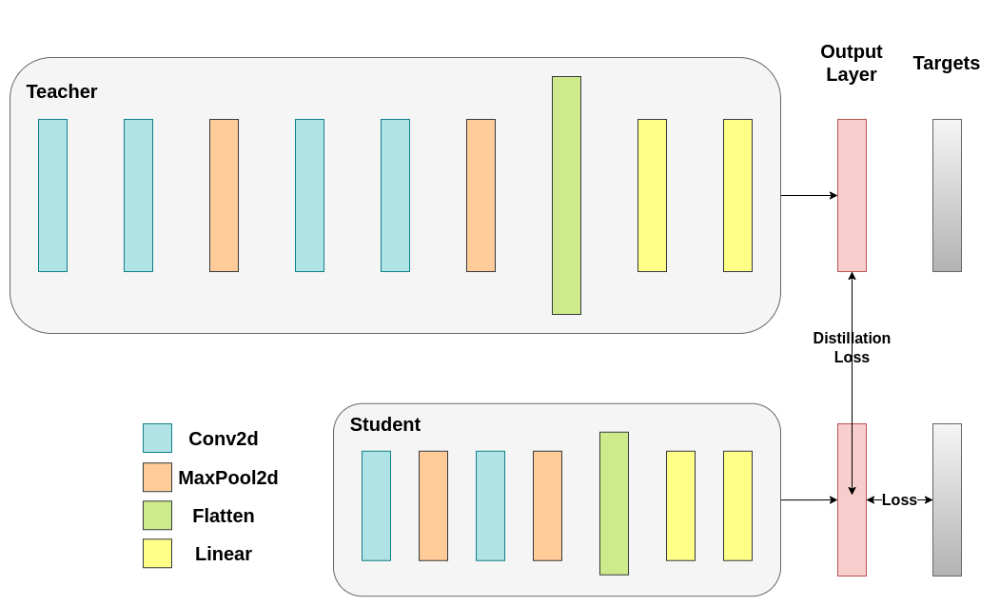
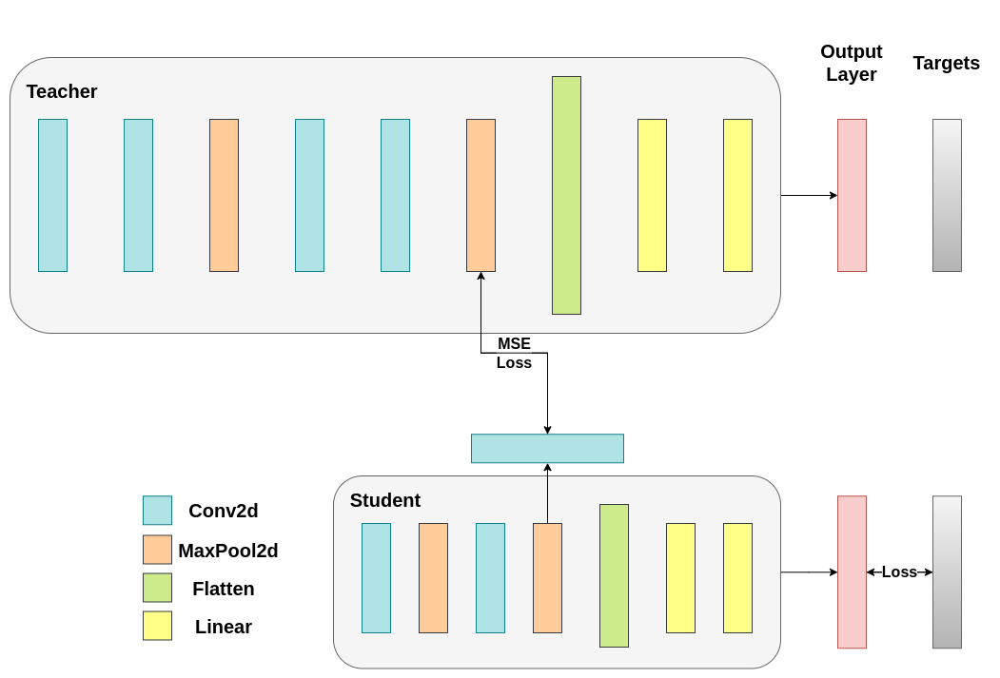

13.4 Distillation
Knowledge Distillation Tutorial
Created Date: 2025-06-23
Knowledge distillation is a technique that enables knowledge transfer from large, computationally expensive models to smaller ones without losing validity. This allows for deployment on less powerful hardware, making evaluation faster and more efficient.
In this tutorial, we will run a number of experiments focused at improving the accuracy of a lightweight neural network, using a more powerful network as a teacher. The computational cost and the speed of the lightweight network will remain unaffected, our intervention only focuses on its weights, not on its forward pass. Applications of this technology can be found in devices such as drones or mobile phones. In this tutorial, we do not use any external packages as everything we need is available in torch and torchvision.
In this tutorial, you will learn:
How to modify model classes to extract hidden representations and use them for further calculations;
How to modify regular train loops in PyTorch to include additional losses on top of, for example, cross-entropy for classification;
How to improve the performance of lightweight models by using more complex models as teachers.
13.4.1 Prerequisites
13.4.2 Loading CIFAR-10
13.4.3 Defining Model Classes and Utility Functions
We employ 2 functions to help us produce and evaluate the results on our original classification task. One function is called \(train\) and takes the following arguments:
model: A model instance to train (update its weights) via this function.train_loader: We defined ourtrain_loaderabove, and its job is to feed the data into the model.epochs: How many times we loop over the dataset.learning_rate: The learning rate determines how large our steps towards convergence should be. Too large or too small steps can be detrimental.device: Determines the device to run the workload on. Can be either CPU or GPU depending on availability.
Our test function is similar, but it will be invoked with test_loader to load images from the test set.

Train both networks with Cross-Entropy. The student will be used as a baseline:
For reproducibility, we need to set the torch manual seed. We train networks using different methods, so to compare them fairly, it makes sense to initialize the networks with the same weights. Start by training the teacher network using cross-entropy:
torch.manual_seed(42)
nn_deep = DeepNN(num_classes=10).to(device)
train(nn_deep, train_loader, epochs=10, learning_rate=0.001, device=device)
test_accuracy_deep = test(nn_deep, test_loader, device)
# Instantiate the lightweight network:
torch.manual_seed(42)
nn_light = LightNN(num_classes=10).to(device)Epoch [1/10], Loss: 1.3524 Epoch [2/10], Loss: 0.8909 Epoch [3/10], Loss: 0.6941 Epoch [4/10], Loss: 0.5536 Epoch [5/10], Loss: 0.4357 Epoch [6/10], Loss: 0.3340 Epoch [8/10], Loss: 0.1819 Epoch [9/10], Loss: 0.1522 Epoch [10/10], Loss: 0.1241 Accuracy of the model on the test set: 75.55%
13.4.4 Cross-Entropy Runs
14.4.5 Distillation Principle
13.4.5 Knowledge Distillation Run

13.4.6 Cosine Loss Minimization Run

13.4.7 Intermediate Regressor Run

13.4.8 Conclusion
None of the methods above increases the number of parameters for the network or inference time, so the performance increase comes at the little cost of calculating gradients during training. In ML applications, we mostly care about inference time because training happens before the model deployment. If our lightweight model is still too heavy for deployment, we can apply different ideas, such as post-training quantization.
Additional losses can be applied in many tasks, not just classification, and you can experiment with quantities like coefficients, temperature, or number of neurons. Feel free to tune any numbers in the tutorial above, but keep in mind, if you change the number of neurons / filters chances are a shape mismatch might occur.